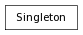

Metaclass for Singleton classes.
>>> class DictSingleton(dict) :
... __metaclass__ = Singleton
...
>>> DictSingleton({'A':1})
{'A': 1}
>>> a = DictSingleton()
>>> a
{'A': 1}
>>> b = DictSingleton({'B':2})
>>> a, b, DictSingleton()
({'B': 2}, {'B': 2}, {'B': 2})
>>> a is b and a is DictSingleton()
True
>>> class StringSingleton(str) :
... __metaclass__ = Singleton
...
>>> StringSingleton("first")
'first'
>>> a = StringSingleton()
>>> a
'first'
>>> b = StringSingleton("changed")
>>> a, b, StringSingleton()
('first', 'first', 'first')
>>> a is b and a is StringSingleton()
True
>>> class DictSingleton2(DictSingleton):
... pass
...
>>> DictSingleton2({'A':1})
{'A': 1}
>>> a = DictSingleton2()
>>> a
{'A': 1}
>>> b = DictSingleton2({'B':2})
>>> a, b, DictSingleton2()
({'B': 2}, {'B': 2}, {'B': 2})
>>> a is b and a is DictSingleton2()
True